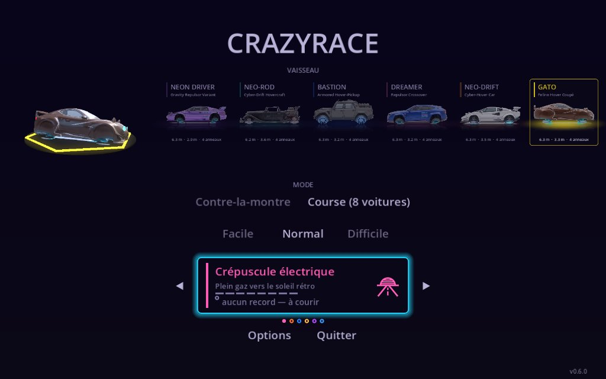
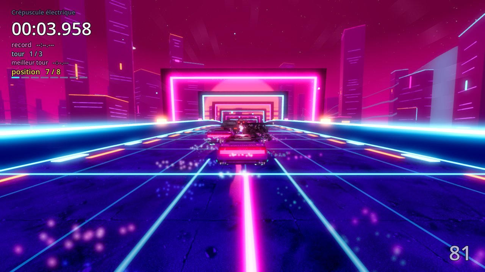
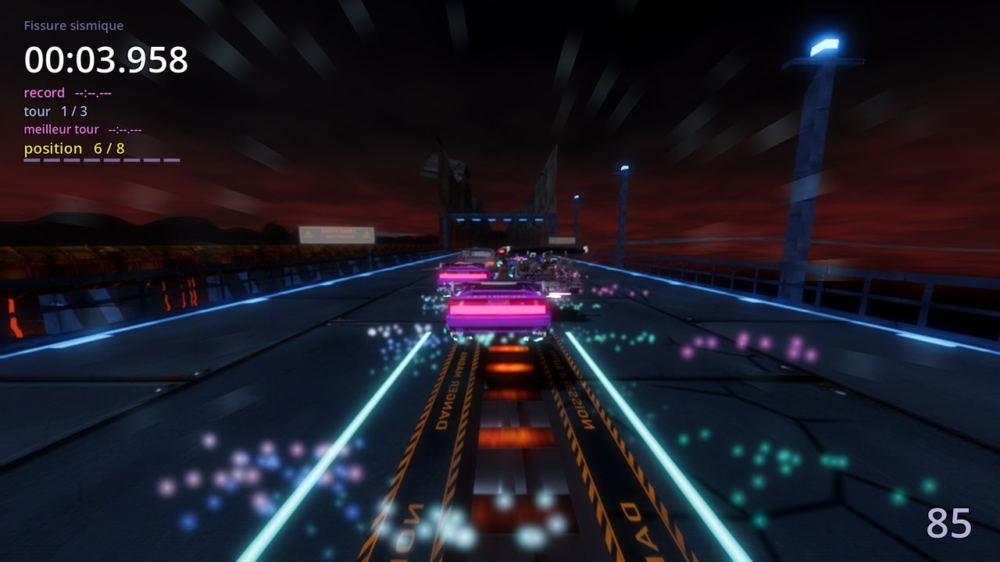
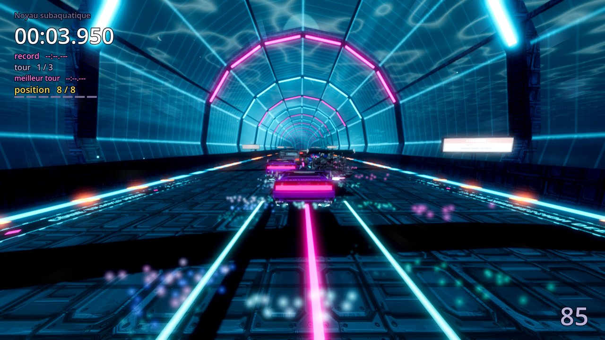
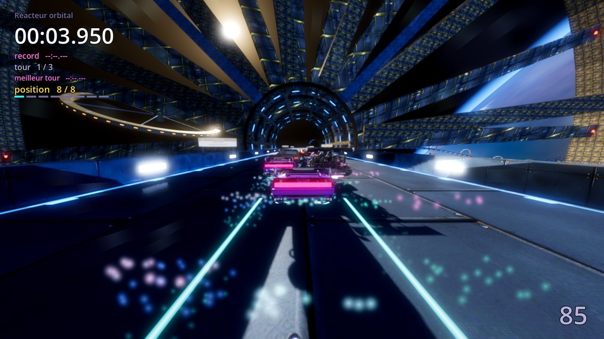
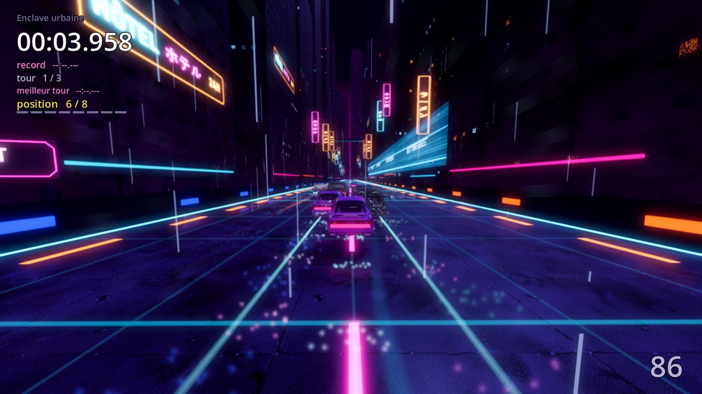
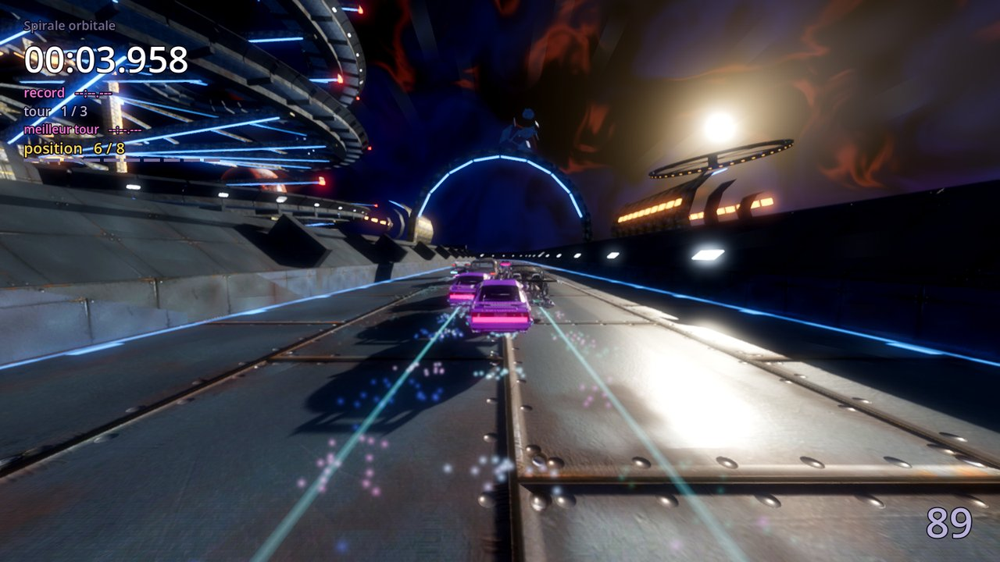

Le jeu
circuits longs, rapides et texturés, chacun avec son identité (réacteur orbital, spirale, enclave urbaine…).
véhicules anti-gravité au caractère propre — même performance, sensations différentes.
pads de boost disséminés sur les tracés pour casser ta propre trace fantôme.
ton meilleur tour reste en jeu sous forme de fantôme : le seul adversaire, c'est toi.
Captures







Configuration minimale
- Windows 10 ou 11, 64 bits
- GPU compatible Vulkan (la quasi-totalité des cartes depuis ~2016)
- ~250 Mo d'espace disque
Android : Android 7.0 ou plus récent, processeur 64 bits (arm64), GPU compatible Vulkan, ~130 Mo d'espace libre.
Mac : macOS 13 ou plus récent sur Mac Apple Silicon (M1 et suivants), macOS 10.15 ou plus récent sur Mac Intel, ~300 Mo d'espace libre.
iPhone / iPad : pas encore disponible.
À savoir avant d'installer
⚠️ Windows : l'installateur n'est pas signé
CrazyRace est un projet gratuit, sans budget de certificat de signature de code. Windows SmartScreen va très probablement afficher « Windows a protégé votre ordinateur ». C'est attendu : clique sur « Informations complémentaires » puis « Exécuter quand même » pour lancer l'installation.
L'installateur ne demande aucun droit administrateur : il s'installe dans ton dossier
utilisateur (%LOCALAPPDATA%\Programs\CrazyRace) et se désinstalle proprement
depuis « Applications » Windows.
⚠️ Mac : le jeu n'est pas notarisé par Apple
Pas de compte développeur Apple payant, donc pas de notarisation : au premier lancement, macOS refuse d'ouvrir le jeu. C'est attendu, il suffit de l'autoriser une fois.
- Décompresse le zip et glisse CrazyRace dans le dossier Applications.
- Ouvre-le : macOS affiche un message de blocage. Ferme-le.
- Va dans Réglages Système › Confidentialité et sécurité, descends jusqu'à la ligne qui cite CrazyRace et clique « Ouvrir quand même », puis confirme.
Si macOS dit que l'app est « endommagée », ouvre le Terminal et tape
xattr -dr com.apple.quarantine /Applications/CrazyRace.app, puis relance.
📱 iPhone et iPad
Sur iPhone et iPad, un jeu ne s'installe que par l'App Store : il n'y a pas de fichier à télécharger comme sur Android. CrazyRace n'y est pas encore.